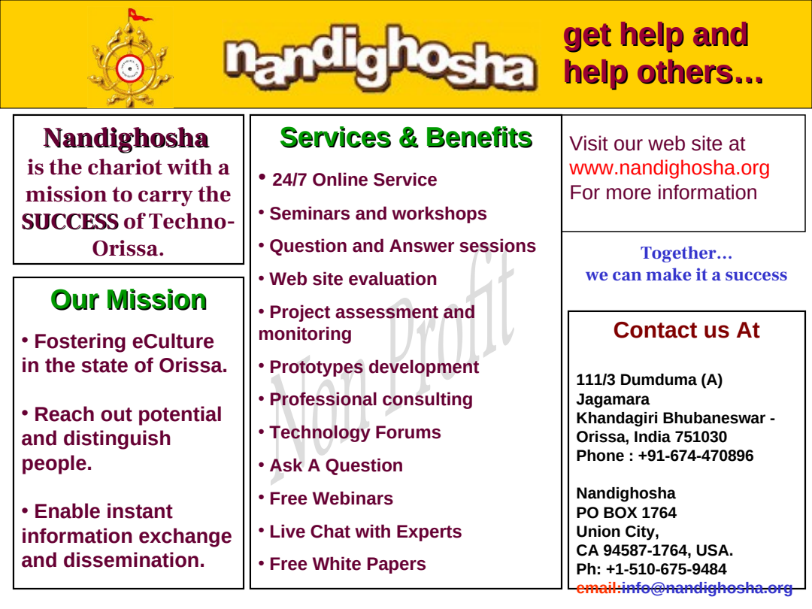

Recovered PowerPoint attachment · read-only
Nandighosha services flyer
Flyer collection · Saved keynote page
The flyer describes the mission and advertised services. Historical service and contact details are inactive.
The image is a modern rendering of the saved slide. It is not a historical screenshot or a guarantee of identical fonts on the original computer.


Selectable slide text
Text follows the stored shape order. Spelling and line breaks are retained; its order may differ from the visual panels.
Non Profit
Nandighosha is the chariot with a mission to carry the SUCCESS of Techno-Orissa.
Contact us At
111/3 Dumduma (A) Jagamara Khandagiri Bhubaneswar - Orissa, India 751030 Phone : +91-674-470896
Nandighosha PO BOX 1764 Union City,
CA 94587-1764, USA. Ph: +1-510-675-9484
email:info@nandighosha.org
Visit our web site at
www.nandighosha.org
For more information
Services & Benefits
24/7 Online Service
Seminars and workshops
Question and Answer sessions
Web site evaluation
Project assessment and monitoring
Prototypes development
Professional consulting
Technology Forums
Ask A Question
Free Webinars
Live Chat with Experts
Free White Papers
Our Mission
Fostering eCulture in the state of Orissa.
Reach out potential and distinguish people.
Enable instant information exchange and dissemination.
Together… we can make it a success
get help and help others…
Source notes
MyCommunity/nandighosha.org.zip!/BahakaOnly/flyer_generic.ppt
The saved shared website template links to this exact file. The keynote flyer is also linked from home/keynote.asp. Matching nested ZIP copies are byte-identical. The original PowerPoint is retained outside this reading edition; no presentation software, form or contact action is required.